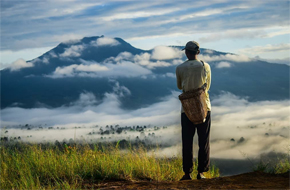

Menara Siger adalah menara yang juga menjadi titik nol Sumatra Gubernur Lampung Sjachroedin Z.P. dalam peresmian Menara Siger pada 30 April 2008, ia menyatakan optimistis Menara Siger akan mendorong kemajuan Lampung. Peresmian ini ditandai dengan penekanan sirine, penandatanganan prasasti, serta penglepasan merpati bersama puluhan duta besar. Dengan iringan lagu Mars Lampung oleh Korps Musik (Korsik) Pemprov Lampung, Ny. Truly Sjachroedin menggunting rangkaian melati di pintu masuk bangunan menara enam lantai tersebut. Gubernur memasuki menara bersama duta besar Kroasia, Sri Lanka, Jepang, Palestina, Afghanistan, Singapura, Filipina, keluarga Sultan Banten dan Sultan Kanoman Cirebon.
way kambas
way kambasa
tempat wisata
Secara gaeografis Taman Nasional Way Kambas terletak antara 40°37’ – 50°16’ Lintang Selatan dan antara 105°33’ – 105°54’ Bujur Timur. Berada di bagian tenggara Pulau Sumatera di wilayah Propinsi Lampung. Pada tahun 1924 kawasan hutan Way Kambas dan Cabang disisihkan sebagai daerah hutan lindung.
curup gangsa
curup gangsa
tempat wisata
curup gangsa terletak di kampung kotaway, kecamatan kasui kabupaten way kanan, air terjun ini salah satu dari 1001 air terjun yg ada di way kanan.
rest area puncak
rest area puncak
tempat wisata
Lampung Barat Lampung Barat memiliki pesona alam yang menyejukkan jiwa, mengingat lokasinya yang berada di punggung Bukit Barisan. Jadi gak salah, kalau kabupaten yang satu ini memiliki banyak destinasi wisata eksotis, yang tentunya sayang untuk kamu lewatkan.
Pulau Mahitam
Pulau Mahitam
tepat wisata
Lokasinya berada tak jauh dari Desa Ketapang yang berada di Lampung Selatan. Keberadaan pasir timbul hingga ke tengah laut ini menjadi daya tarik tersendiri bagi para wisatawan.
Tegal Mas
Tegal Mas
tepat wisata
Pulau Tegal Mas menyajikan suasana laut yang sepi, karena lokasinya di pulau terpencil yang dikepung perbukita. Air laut berwarna hijau toska yang bening, dengan terumbu karang yang indah menjadi pemandangan utama di depan resor.

Bawang Bakung
Bawang Bakung
tepat wisata
bawang bakung teletak di kota liwa, kabupaten lampung barat, wisata ini cocok sekali bagi pemburu kabut di pagi hari, jalannya yg mudah di tempung mengunakan motor jadi tak perlu mendaki untuk sampai tujuan
Suoh
Suoh
tepat wisata
Wisata Keramikan Suoh ini mulai dibuka sekitar tahun 2004 dan mulai dikenal tahun 2006, letaknya berada di kaki Bukit Gunung Ratu, Saat menuju Keramikan itu, pengunjung akan melintasi padang rumput (savana) yang disebut “Bukit Telletubies” serta empat danau: Asam, Belibis, Lebar, dan Seminyak.